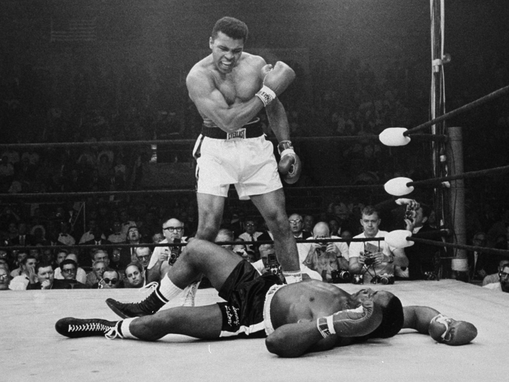

Muhammad Ali
1942 - 2016
The Greatest
Muhammad Ali born Cassius Marcellus Clay Jr was an American professional boxer, activist, entertainer and philanthropist. Nicknamed The Greatest, he is widely regarded as one of the most significant and celebrated sporting figures of the 20th century, frequently ranked as the best heavyweight boxer and greatest athlete of the century.

“The man who views the world at 50 the same as he did at 20 has wasted 30 years of his life.” - Muhammad Ali
The following list is a timeline of Muhammad Ali's life:
- 1942 - January 17, Muhammad Ali was born in Louisville, Kentucky. His birth name was Cassius Clay.
- 1954 - His bicycle was stolen and he told the police offie, Joe Martin, that he wanted to "whup" whoever had stolen his bike. Martin trained young boxers and started to train Clay.
- 1956 - He wins the novice Golden Gloves Championship as a light heavyweight.
- 1959 - He wins the AAU light heavyweight title at the Golden Gloves Tournament of Champions.
- 1960 - In September he wins the light heavyweight gold medal at the Rome Olympics, his first major success in athletics.In October he wins his first professional bout with Tunney Hunsaker.
- 1963 - In October he wins his first foreign professional bout with Henry Cooper in London before 55,000 fans.
- 1964 - February 25, he knocked out Sonny Liston. This defeat allowed him to become the heavyweight champion. February 26, he joined the Nation of Islam. March 6, at the age of 22, he changed his name from Cassius Clay to Muhammad Ali. August 14, he married his first wife Sonji Roi.
- 1966 - Ali is drafted and he files for conscientious objector status as a Muslim minister. His marriage to Sonji Roi ended in divorce.
- 1967 - In April, the government denies his filing for conscientious objector status and he was drafted into the Army. He attends the induction ceremony, but he refused to step forward.In June, Ali is found guilty of refusing induction into the Army. His passport is revoked.The boxing association takes back his boxing titles and bans him from boxing for three years.He married his second wife, Belinda Boyd. They would go on to have four children together.
- 1970 - On October 26, Ali returns to fighting in Atlanta and wins over Jerry Quarry.
- 1971 - In March, in a famous match called "The Fight of the Century," Joe Frazier knocked Ali down, but Ali got up. However, after 15 brutal rounds, it was still ruled that Frazier won. In June, the Supreme Court reverses its 1967 conviction and ruled that he was not guilty of evading the military, since he should not have been drafted in the first place due to his religious beliefs.
- 1974 - January 28, he won over Joe Frazier. October 30, he defeated George Foreman and reclaimed the title of Heavyweight Champion of the World. This fight was a very famous event known as the "Rumble in the Jungle," since the fight was at a stadium in Zaire.
- 1975 - October 1st, Ali beats Joe Frazier in Manila.
- 1976 - September 28, Ali beats Ken Norton in Yankee Stadium in New York.
- 1977 - Due to an affair with Veronica Porsche, his marriage to Boyd ended in divorce. He went on to marry Porsche and they had two daughters together.
- 1978 - February 15, Ali lost the heavyweight title to Leon Spinks in a split decision. September 15, Ali wins the heavyweight title back from Leon Spinks after a battle at the Superdome in New Orleans.
- 1980 - Ali came back and fought with Harry Holmes. Ali lost the fight.
- 1981 - December 12, once again, Ali came back and fought with Trevor Berbick. Ali lost the fight. December 13, at the age of 39, Ali announces his retirement from boxing.
- 1984 - He was diagnosed with Parkinson's disease.
- 1986 - Ali and Porsche got a divorce, and Ali married Yolanda Ali. They adopted a son together.
- 1996 - Ali lit the Olympic flame in Atlanta, Georgia.
- 1997 - He received the Arthur Ashe Courage Award. His picture is placed on the front of the Wheaties cereal box. He is named Sportsman of the Century by Sports Illustrated.
- 2005 - He is awarded the Presidential Medal of Freedom, the highest U.S. civilian honor.Muhammad Ali left the public eye but continued to provide humanitarian support as well as support to the Muhammad Ali Parkinson Center at Barrow Neurological Institutes as well as other charities.
- 2016 - Muhammad Ali died on June 3 as the result of septic shock due to unspecified natural causes. He was 74 years old. He was buried in Louisville, Kentucky. He planned his own funeral which included eulogies from former President Bill Clinton, sportscaster Bryant Gumbel and comedian and close friend Billy Crystal.